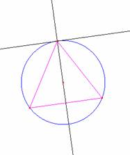
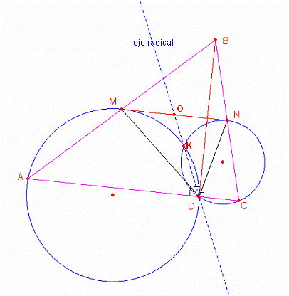

Problema para el aula
Problema 310
Muestra que la recta DE pasa por el punto medio de MN.
X Olimpíada Matemática
Rioplatense
San Isidro, 13 de
Diciembre de 2001
Nivel I – Segundo Día
http://www.oma.org.ar/enunciados/omr10.doc
Segunda solución de William RodríguezChamache.
profesor de geometria de la
"Academia integral class" Trujillo- Perú,
con un alumno suyo,
Frank Guiuseepi Coronado Idrogo que
Sabemos que:
Se cumple que β = α
Además en todo triángulo isósceles toda paralela a las base es tangente a la circunferencia circunscrita al triángulo.

Sea la grafica con los datos indicados

Determinamos que el segmento MN es tangente a las dos circunferencias luego la recta que pasa por los puntos D y K es el eje radical por lo tanto por definición de eje radical se cumple que OM=ON
Prof.: William rodrigue chamache